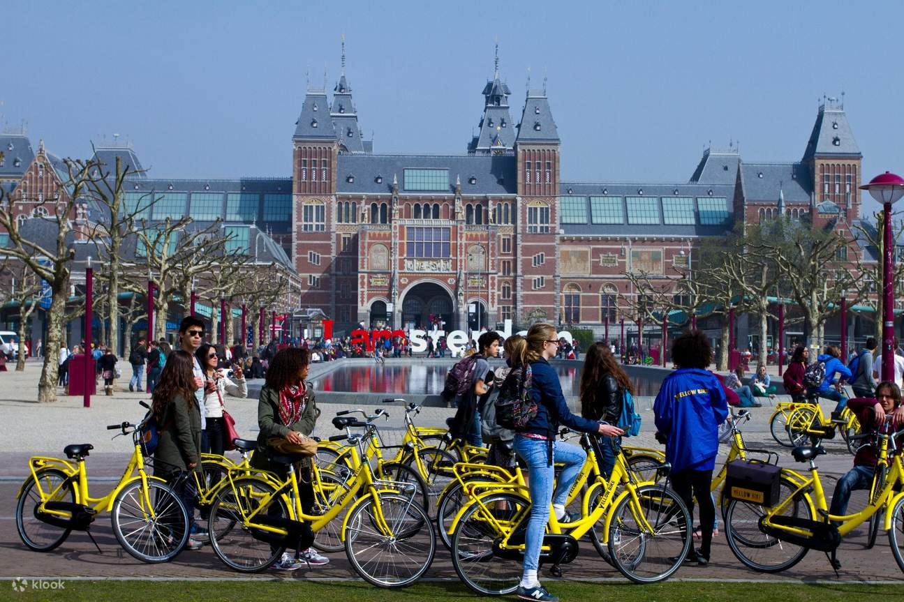
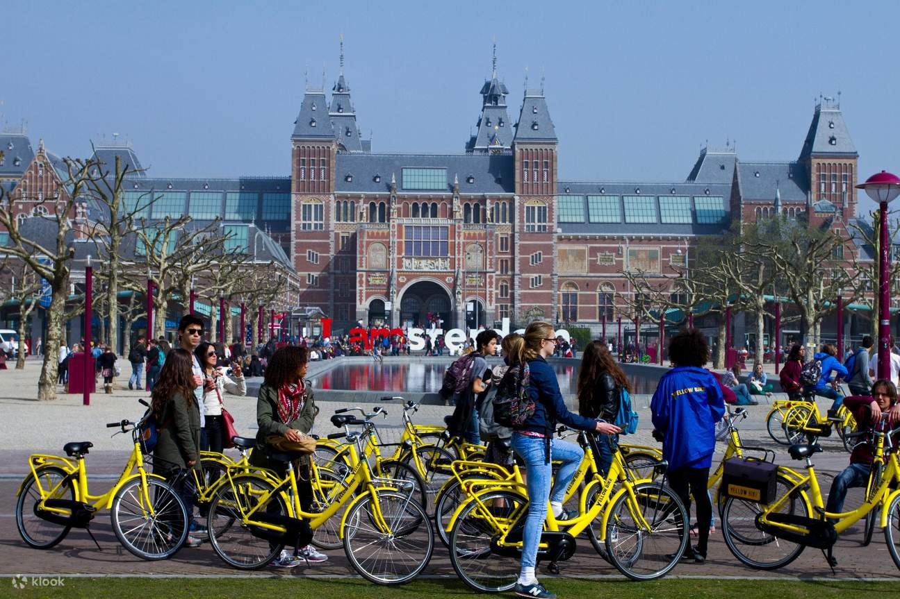

Amsterdam
Pyöräily osana kulttuuria
Amsterdam on tunnettu pyöräilykaupunkina, ja kaupunkipyörät ovat oleellinen osa kaupungin liikennekulttuuria. Amsterdamin kaupunkipyöräjärjestelmä tarjoaa helpon ja kätevän tavan liikkua kaupungissa, ja se on suosittu niin paikallisten kuin matkailijoidenkin keskuudessa. Kaupunkipyörät ovat saatavilla useissa vuokrauspisteissä ympäri kaupunkia, ja niitä voi käyttää lyhyisiin matkoihin, kuten työmatkoihin tai kaupungin nähtävyyksien tutkimiseen.
Kaupunkipyörät ovat ympäristöystävällinen vaihtoehto, ja ne edistävät kestävää liikkumista kaupungin tiheästi asutuilla alueilla. Järjestelmä tukee myös Amsterdamissa vallitsevaa pyöräilykulttuuria, joka on yksi kaupungin tunnusmerkeistä. Vuokrausprosessi on yksinkertainen, ja pyöriä voi vuokrata joko lyhytaikaisesti tai pidemmäksi ajaksi riippuen käyttäjän tarpeista.
Kaupunkipyörät ovat myös osa Amsterdamin laajempaa pyörätieverkostoa, joka sisältää hyvin merkittyjä pyöräteitä ja -kaistoja, mikä tekee pyöräilystä turvallista ja nautinnollista. Kaiken kaikkiaan Amsterdamin kaupunkipyörät tarjoavat käytännöllisen ja nautinnollisen tavan tutustua kaupunkiin ja sen ainutlaatuiseen ilmapiiriin.